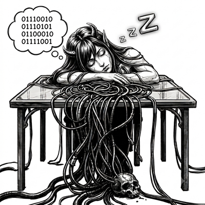

Open-source e-ink firmware
Ruby listens to the
air around you.
Custom firmware for the Xteink X3 & X4 e-ink readers that turns the hardware into something else entirely: a stealthy, long-battery-life passive RF signal analyzer with a small digital companion living in the corner of the screen.

Educational and authorized-testing use only.
Ruby passively captures WiFi and Bluetooth traffic from everything in range, not just your own devices — and can optionally transmit real 802.11 deauthentication frames (see Active deauth — off by default, gated behind an explicit target list). Only point it at networks and devices you own, or have explicit written authorization to test. Capturing traffic from networks you don't control, and especially transmitting deauthentication frames at them, is illegal in most jurisdictions (wiretapping/interception and RF-interference statutes both apply) regardless of how small or "hobbyist" the device is. This project is published for security research and education. You are solely responsible for how you use it and for knowing the laws that apply where you use it.
It is not a book reader. It does not read EPUBs, sync with KOReader, or talk to OPDS catalogs. It listens — passively, receive-only, by default — to the WiFi and Bluetooth Low Energy traffic already in the air around it, catalogs what it hears into an encrypted on-device log, and Ruby reacts with a changing expression as a visual front-end for that catalog — closer to Pwnagotchi's mood faces than to a pet whose appearance grows or evolves. A separate Level 1-5 badge does track lifetime EXP (see Meet Ruby), but leveling only ever changes that badge's number, never the creature's art.
01At a glance
Hardware
Xteink X3 or X4, ESP32-C3 (single-core RISC-V, no PSRAM), 792×528 e-ink panel, runs in landscape. One firmware binary for both; hardware is detected at runtime, not chosen at build time.
Capture
802.11 monitor-mode WiFi sniffing across all channels (beacons, probe requests/responses, WPA 4-way-handshake detection) plus passive BLE advertisement scanning — neither path associates, pairs, or connects to anything by default.
Log
Every observation is deduplicated for on-screen stats and independently written to an AES-256-GCM encrypted daily log on the SD card, decryptable on-device or via a bundled Python script.
Opt-in, off by default
Raw plaintext .pcap handshake export for offline auditing with
hashcat/hcxpcapngtool, and an active-deauth capability gated by a two-list
whitelist/blacklist system — see why it's currently non-functional
on this hardware.
On-device management
A live network-scan picker to build the whitelist/blacklist without a PC, a Power-button action you can set to Screenshot/Pause/Refresh, and a Settings screen for every capture toggle.
Vendor lookup
Always on, no setting to flip: Recent Devices falls back to an optional vendor-name lookup by MAC OUI for entries with no advertised SSID/name — see Vendor OUI lookup.
Level 1-5 badge
Tracks lifetime EXP (handshakes worth far more than routine unique-device sightings) beside Ruby's name chip, with a matching progress bar next to the battery badge. Cosmetic only — the creature's art never changes.
License
MIT. Single PlatformIO environment (default), built and static-analyzed on
every push via GitHub Actions.
02Installing Ruby
The easiest way to get Ruby onto real hardware is to flash a prebuilt release straight from your browser — no toolchain install required.
-
1
Grab the latest
firmware-default-v*.binfrom the Releases page. -
2
Plug the X3/X4 into your computer with a USB-C cable.
-
3
Open CrossPoint Reader's flash tool in a Chromium-based browser (Chrome, Edge, or Opera — it uses the Web Serial API, which Firefox and Safari don't support).
-
4
Select the device's serial port when prompted, point the tool at the
.binyou downloaded, and follow its on-screen flashing steps. It writes directly over USB; nothing leaves your machine. -
5
Power-cycle the device. It should boot straight to the splash art and land on the dashboard.
This is the same web-based flashing tool used for CrossPlant/CrossInk-family firmware on this hardware, since Ruby shares its low-level display/power/storage bring-up with that project (see Where this comes from). Prefer to build it yourself, audit the source first, or you're developing against it? See Building from source below.
03Meet Ruby
The creature's shape doesn't change — it's one fixed form, already fully itself. What changes frame to frame is its expression, redrawn in a small fixed corner box on the dashboard as a live reaction to what's been heard most recently over the air.


There's no stage, nothing to "feed" — just a mood, the same idea as Pwnagotchi's faces,
driven entirely by SignalCatalog's counts rather than anything cosmetic.
Separately, a small Level 1-5 badge sits next to the "RUBY" name chip,
tracking lifetime EXP: a captured handshake is worth 2000 EXP, a newly-seen unique device
(AP/client/BLE) worth 1 — weighted that unevenly because a handshake is roughly 2000x rarer
in practice, so the two end up contributing comparably to leveling over a typical session
instead of one drowning out the other. Leveling only ever changes that badge's number,
never the art above. A matching progress bar sits in the header, next to the battery badge,
filling up toward the next level, with an "N/M EXP" label beside it. Crossing
into a new level briefly shows a "LEVEL UP → Lv.N" banner.
CURIOUS specifically requires several new-unique sightings within a short window, not just one — a single new device reads as ordinary CONTENT instead, so CURIOUS stays meaningful even in a busy RF environment where new devices show up constantly. Pausing capture shows BORED immediately, since nothing's being observed anymore, rather than freezing whatever mood was showing right before Pause.
Ruby also has something to say about it. A thought bubble running along the bottom edge of
her box (RubyThoughts.h), tailing up into her face, shows a quirky,
hacker-flavored one-liner tied to whichever mood is currently showing — "ooh, what's this
OUI?" while CURIOUS, "netstat -a: empty :(" while LONELY — updating on the same ~1.2s
cadence as the art itself. It's briefly replaced by a pointed speech bubble reacting to
something that just happened — a new AP/client/BLE device, a captured handshake, a level
up, a nearby deauth alert — each with 9 possible lines to pick from, before fading back to
the ambient thought bubble.

04How it works
-
1. Capture
WifiSnifferputs the ESP32-C3's radio into 802.11 monitor mode and hops across channels, extracting beacon/probe-request SSIDs, MAC addresses, and — when it hears one — the presence of a WPA 4-way handshake and which message number it is. The radio holds its current channel for a few seconds whenever it sees part of a handshake, instead of hopping away mid-exchange.BleScannerruns a passive BLE scan (it never sends a SCAN_REQ) and records advertised MACs, names, and manufacturer-data length. Neither path associates, pairs, or connects to anything, and BLE scanning never transmits. -
2. Catalog
Every observation is deduplicated by
SignalCatalogagainst a bounded in-RAM hash set. The first time a given MAC/role is seen, that's a "unique" event: it increments a lifetime counter and nudges the creature's expression. -
3. Log
Independently of deduplication, every observation is encrypted (AES-256-GCM via mbedtls, one record per packet) and appended to a daily log file on the SD card. The AES key is derived from a random seed generated on first boot plus this chip's eFuse MAC address and lives only in internal NVS flash — pulling the SD card gets you ciphertext with no key beside it.
-
4. React
The creature's shape (
RubyManager) never changes — see Meet Ruby for what each expression means and how the separate Level 1-5 badge tracks lifetime EXP alongside it without touching the art. -
5. Display
The dashboard is mostly static: a header, Ruby's box with its live Mood readout, boxed RF stat panels, a footer. The creature lives in a fixed corner box that redraws on its own ~1.2s cadence using
HalDisplay::FAST_REFRESHwithout ever touching any pixel outside that box — a genuine partial refresh on hardware with no windowed-update API.
05Screens
Dashboard home
The creature, a Level 1-5 badge and EXP progress bar, current Mood, and an ACTIVE/PAUSED tag. A RECENT DEVICES card shows the latest observations in detail; a SIGNAL HISTORY card stacks HANDSHAKES (a persisted "N ago" list, newest first) over a live RSSI bar chart. Below that, SIGNALS (unique AP/client/BLE/handshake counts plus "Last Hand Shook:") and CAPTURE STATUS (active capture mode, log size, uptime) sit side by side. A thought/speech bubble along the bottom edge reacts to mood and events, and a banner announces deauth alerts, level-ups, or handshake captures.
Confirm Settings · Left Pause/Resume · Right Export · Up Recent Devices · Down Log Viewer · Back Full refresh
Settings
Toggle WiFi/BLE capture (BLE off by default), adjust WiFi channel dwell time, lock WiFi monitor to a single channel, set the ghost-clear refresh interval, choose the Power-button tap action, turn on raw handshake capture or active deauth (both off by default), manage the whitelist/blacklist, reveal the log's AES key, wipe the log, or reset counters back to zero.
Export / Maintenance
How to pull captures off the SD card, plus the current session's record count, raw-capture file stats, a PMKID-capable-capture count, and deauth burst/frame counters.
Recent Devices
A live, RAM-only feed of the last 16 WiFi/BLE observations (type, MAC, RSSI, SSID/name, time since seen), newest first, read-only, with vendor-name fallback. Laid out as a dense multi-column grid so all 16 entries fit on screen at once. Nothing shown here is persisted — it's lost on reboot along with the rest of RAM.
Log Viewer
Browses the encrypted capture log on the device itself, no PC required. Left/Right switch between daily log files, Up/Down page through records — around 27 at a time, newest first.
06Raw handshake capture (crackable .pcap export)
Everything above is deliberately metadata-only: the encrypted log records that a handshake happened and which message numbers were seen, never the key material itself. Raw handshake capture is a separate, opt-in capability for a different purpose — auditing the password strength of networks you own, offline, with tools like hashcat or hcxpcapngtool.
- Off by default. Turn it on at
Settings → Raw handshake capture. The Settings screen shows a warning explaining the tradeoff before you flip it on. - When enabled, it captures the WPA 4-way-handshake frames verbatim (ANonce/SNonce/MIC included) plus the SSID-bearing beacon for each network involved, written to a standard libpcap file at
/.ruby/pcap/YYYYMMDD.pcap— feed it straight into hashcat/hcxpcapngtool. - These files are plaintext, unlike everything else Ruby writes to SD — a cracking tool needs the exact bytes that went over the air, so this path can't be routed through the AES-256-GCM encrypted log.
- The Export screen also shows a PMKID-capable count — message-1 frames that carry the PMKID key-data element, independently crackable via hashcat's
-m 22000PMKID mode. - Turn it back off when you're not actively auditing — it's meant to be run deliberately, not left on as a background default.
Realistic capture rates are low — 0-2 handshakes/hour of passive listening is normal, not broken.
WiFi monitor mode hops all 13 channels by default, spending 300ms on each, so any single
channel is only actually being listened to roughly 1/13th of the time. Two real levers to
improve it: locking WiFi channel scope to one known channel, and
Active deauth, which forces a handshake to happen now instead of
waiting on one by chance.
07Passive deauth/disassoc detection
Always on, no setting to flip, costs a few hundred bytes: DeauthDetector watches
the deauth/disassoc management frames WifiSniffer already classifies and flags
when their rate spikes — 5 or more within a 5-second window triggers a 15-second alert. This
is evidence that something is actively attacking a nearby network, not necessarily
this device — it's a passive counter, transmits nothing, and never changes what gets
captured. The Dashboard's Nearby DeAuth row and banner are this detector's
only UI surface.
08Active deauth
Status: confirmed NOT functional on this hardware, via real-hardware testing.
The transient-WIFI_MODE_STA approach did fix the earlier crash-loop. But every
burst's esp_wifi_80211_tx() call was rejected by the WiFi driver itself — it
logs wifi: unsupport frame type: 0c0 once per rejected frame — matching
ESP-IDF's own documented behavior: its raw-TX allowlist hard-codes out deauth specifically,
at the driver level. Bursts still get attempted, counted, and logged, but nothing actually
reaches the air. The only known way past this — patching ESP-IDF's precompiled
libnet80211.a — targets classic ESP32/S2/S3 (Xtensa); this device is an
ESP32-C3 (RISC-V), with no confirmed working precedent. Not attempted here as
a result — passive capture, optionally with WiFi channel scope locked to a known target's
channel, is the only capture path confirmed to actually work on this firmware.
Passive capture alone often isn't enough to actually catch a handshake — a real 4-way handshake completes in well under a second, and the radio has to already be parked on the right channel when it happens. Active deauth is meant to close that gap by transmitting real 802.11 deauthentication frames at a target network, forcing a client to reconnect so the resulting handshake lands in raw capture instead of waiting for one to happen on its own. On this hardware, per the status above, it doesn't currently manage to transmit anything.
- Off by default, and requires raw handshake capture to also be on.
- Every target is gated by two genuinely independent lists (
TargetList, backed by/.ruby/targets.txt):- Whitelist non-empty — only the BSSIDs on it are attacked.
- Whitelist empty, blacklist non-empty — every BSSID seen is attacked except the ones on the blacklist.
- Both empty (the default) — nothing is attacked, even with the feature switched on.
- Each targeted BSSID gets a short burst of deauth frames, then a 30-second cooldown, and attacks stop entirely for a BSSID once its handshake has been captured.
Treat this as real RF interference against whatever it targets, should the underlying driver restriction ever get lifted. Transmitting deauthentication frames at a network you don't own or don't have explicit authorization to test is illegal in most jurisdictions, regardless of how small the transmitting device is. Only enable this against networks you own or are explicitly authorized to audit — the both-lists-empty default exists so that flipping the setting on can never itself put you outside that boundary.
09Vendor OUI lookup
Recent Devices falls back to a vendor-name lookup, by MAC address prefix, for entries that
don't already have an SSID or advertised name. This needs a user-supplied file at
/.ruby/oui.txt — not shipped with the firmware — one
AABBCC<TAB>Vendor Name entry per line, the same format IEEE's public OUI
registry export or Wireshark's manuf file already use. Without that file
present, unlabeled entries just show "(no name)". No database ships in firmware, so this
costs nothing when the file isn't present. A small 32-entry result cache means the
same vendor, looked up repeatedly across redraws of the same handful of on-screen
devices, only ever touches the SD card once.
A passive deauth/disassoc detector, BLE tracker detector, and persistent AP history were all prototyped alongside this on real hardware and then pulled back out: the AP history table alone added a fixed ~14 KB of permanent RAM use, and this chip has only ~380 KB total with no PSRAM to absorb it — enough to reliably starve NimBLE's controller init of memory it needs. Reliable BLE capture won out.
10Hardware
Same target as upstream CrossPlant/CrossInk: Xteink X3 or X4, ESP32-C3 (single-core RISC-V, ~380 KB usable RAM, no PSRAM), 792×528 e-ink panel. The dashboard runs in landscape — the panel's own native orientation, needing no rotation math to draw into.
BLE passive scan — off by default
Real-hardware testing found that starting it fragments the same DMA-capable memory pool
EncryptedLog's hardware AES needs, tripping a proactive safety restart every
boot. A crash-loop guard forces BLE (and raw handshake capture / active deauth) back off
automatically after 3 restarts in a row, so a stuck device recovers on its own.
BLE + raw handshake capture: mutually exclusive
BLE alone settles at ~63 KB heap once running — fine on its own — but turning raw handshake capture on while BLE is already running (or vice versa) tips the DMA-capable pool into fragmenting badly enough to crash-loop. Settings now refuses to enable either one while the other is already active.
11Look and feel
The UI font is Space Mono (SIL OFL 1.1) — a monospace face chosen to read as "instrument readout" rather than "app UI," which fits a device whose whole job is displaying raw RF telemetry. Boxed elements (the footer's button tabs, the battery badge, Ruby's box, Settings' selected row) use a shared rounded-outline style instead of solid filled highlights — outlines read as "buttons" without being the heaviest, most ghost-prone thing on the screen after a fast refresh.
All of Ruby's art (splash, mood faces, sleep art) is source BMP under
bmp/,
baked into the firmware image at build time so a freshly flashed device shows it immediately
with no SD card setup required. It can still be overridden per-file at
/bmp/<name>.bmp on the SD card without recompiling — see
bmp/README.md
for the full format/size table and how to swap in your own art.
12Where this comes from
Ruby is built on CrossPlant's hardware foundation — the same e-ink display driver, input handling, power management, SD storage, font rendering, and activity/screen framework that make CrossPlant (and its own ancestor, CrossInk) boot and draw on real Xteink hardware. Everything above that foundation — the RF capture layer, the encrypted log, the creature, every screen — is new.
| Layer | What it is |
|---|---|
freeink-sdk/, lib/hal, lib/GfxRenderer, lib/EpdFont |
Hardware bring-up: display driver, buttons, power, SD card, fonts, graphics primitives. Carried over from CrossPlant/CrossInk largely unmodified. |
lib/RfCapture new |
802.11 monitor-mode WiFi sniffing, passive BLE advertisement scanning, the opt-in raw-frame .pcap export path, and the opt-in DeauthEngine/TargetList capability. |
lib/SignalCatalog new |
Deduplicates observations into lifetime unique-device counters, a RAM-only ring of recent sightings, and a live dedup-by-BSSID scan cache for the network-picker screens. |
lib/RubyLog new |
AES-256-GCM encrypted append-only capture log. |
src/ruby new |
The creature: procedurally-rendered, fed by SignalCatalog. |
src/activities/* new |
Dashboard, Settings, device list, log viewer, network picker, Export/Maintenance screens replace CrossPlant's reader/browser/pet activities entirely. |
src/CaptureControl, src/Screenshot new |
Session-only capture pause and framebuffer-to-BMP screenshot, both reachable from the Power button. |
Reading-specific subsystems (EPUB/TXT/XTC rendering, the file browser, OPDS, KOReader sync, WiFi-connected file transfer, the Lexend Deca/Bitter/Charein reading fonts, i18n) were removed, not disabled — there is no code path for them left in this repo.
13Building from source
pio run -e default # compile
pio run -e default -t upload # flash over USB
There is a single PlatformIO environment (default). Unlike upstream CrossPlant's
tiny/xlarge split, Ruby ships one fixed, small UI font set, so
there's no equivalent tradeoff to build variants around. The same binary supports both X3 and
X4: hardware is detected at runtime (HalGPIO::deviceIsX3()), not at build time.
.github/workflows/ci.yml
builds this env and runs pio check static analysis on every push/PR.
14On-device log decryption
The Log Viewer screen (Dashboard → Down) decrypts and browses the
log right on the device, with no key ever typed in. This works because the AES-256 key that
encrypted a given file never actually left the device that wrote it:
EncryptedLog derives it once at boot (hardware TRNG seed + eFuse MAC) and keeps
it resident in RAM for as long as the firmware is running. Reading a record back is just
mbedtls_gcm_auth_decrypt with that same in-memory key, plus GCM's built-in
authentication tag check, which doubles as corruption/tamper detection for free.
Random access to record N is O(1) rather than a scan from the start of the file: every record
is encrypted from a fixed-size 39-byte LogRecordPlaintext, so every on-disk
envelope is exactly the same 70 bytes, and record N always starts at byte N * 70.
The PC-side path still exists and is still the only way to get the plaintext off the device entirely:
pip install -r scripts/requirements.txt
python3 scripts/decrypt_log.py --key <64 hex chars> 20260717.pclog15Exporting captures
There is no USB/WiFi transfer protocol — power the device off, pull the SD card, and copy files to a computer:
- Encrypted log —
/.ruby/log/*.pclog. Decrypt with the command above and the key from Settings → Reveal log key. - Raw handshake captures (only if turned on) —
/.ruby/pcap/*.pcap, already plaintext. Load directly into hashcat or hcxpcapngtool. - Screenshots (only if used) —
/.ruby/screenshots/*.bmp, plain uncompressed 1-bit bitmaps.
/.ruby/oui.txt (vendor OUI lookup) goes the other direction — it's a file you supply yourself, not one Ruby writes.
16What "encrypted" means here
The log is AES-256-GCM encrypted at rest so that a lost or stolen SD card doesn't hand over a
plaintext capture history. It is not anonymized — record contents are the
same MAC addresses, SSIDs, and RSSI values a passive analyzer would see over the air,
deliberately, so the log is actually useful for its purpose. Treat it and the device itself
the same way you'd treat any other RF capture tool: know the rules that apply where you use
it, and don't point it at networks or people without a reason you'd stand behind. This does
not apply to raw handshake capture: those .pcap files are
plaintext by necessity and are off by default specifically because they don't get this
protection.
17What was removed, and why
Book-reading, remote sync, and WiFi-client features made no sense for a device whose entire value proposition is that it never associates with a network:
- Epub/Txt/Xtc readers, file browser, OPDS, KOReader sync — no reading surface exists.
- WiFi station mode / "join network" / web server / WebDAV / OTA-over-HTTP — dropped entirely. The device's WiFi radio only ever runs in monitor mode; it never has an IP address.
- Multi-language reading fonts and i18n — the UI is English-only dashboard chrome, not paragraphs of book text.
- Auto-sleep on inactivity — a passive analyzer's entire job is to sit still and listen with no buttons pressed; auto-sleeping on that basis would defeat the point.
- A "Lore" progression screen — read as a pet-sim feature bolted onto a recon tool rather than something that earned its screen real estate.
License
MIT, same as upstream CrossPlant/CrossInk. freeink-sdk/ carries its own MIT
license and third-party attribution — see
freeink-sdk/NOTICE.